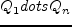
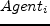
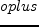

Next: About this document ...
documentclassllncs
usepackagetimes
par
usepackage[ruled,noend]algorithm2e
par
usepackageepsfig
usepackagetimes
usepackagehelvet
usepackagecourier
usepackagelatexsym
usepackageamssymb
usepackagemakeidx
par
usepackagelscape,graphicx
par
renewedcommandbottomfraction.9
setcountertotalnumber50
setcountertopnumber50
setcounterbottomnumber50
par
renewedcommandtopfraction0.85
renewedcommandtextfraction0.1
intextsep 1pt plus 2pt
renewedcommandfloatpagefraction0.75
par
newedcommandRmathbb R
par
begindocument
par
newedenvironmentdemotextscProof. hfill vspace0.5cm
par
mainmatter
par
titleA Framework for Distributed Constraint Optimization
authorAdrian Petcu
instituteEcole Polytechnique Fédérale de Lausanne (EPFL), CH-1015 Lausanne (Switzerland)
emailadrian.petcu@epfl.ch
textbfTechnical Report EPFL:2006/001
par
maketitle
par
newedcommandcomment[1]
par
beginabstract
par
We present a framework for distributed combinatorial optimization.
The framework is implemented in Java, and simulates a multiagent environment in a single Java virtual machine.
Each agent in the environment is executed asynchronously in a separate execution thread, and communicates with its peers through message exchange.
par
The framework is highly customizable, allowing the user to implement and experiment with any distributed optimization algorithm.
par
Support for synchronous/asynchronous message passing, monitoring and statistics, as well as problem visualization tools are provided.
par
A number of distributed algorithms are already implemented in this framework, like the Distributed Breakout Algorithm citeyokoo95distributed and the DPOP Algorithm citePetcu2005.
par
A number of random evaluation problems are also provided, from two distinct domains: meeting scheduling and resource allocation in a sensor network.
endabstract
sectionIntroduction
Constraint satisfaction and optimization are powerful paradigms that model a large range of tasks like scheduling, planning, optimal process control, etc.
Traditionally, such problems were gathered into a single place, and a centralized algorithm was applied in order to find a solution.
However, problems are sometimes naturally distributed, so Distributed Constraint Satisfaction (DisCSP) was formalized by Yokoo in citeyokoo92distributed.
These problems are divided between a sent of agents, which have to communicate among themselves to solve them.
par
DisCSP has a number of practical advantages over its centralized counterpart.
Centralized solving may be inappropriate due to privacy and data integration problems.
Dynamic systems are another reason: by the time we manage to centralize the problem, it has already changed.
par
To address distributed optimization, complete algorithms like OptAPO and ADOPT have been recently introduced.
ADOPT citeModi03 is a backtracking based bound propagation mechanism.
It operates completely decentralized, and asynchronously.
The downside is that it may require a very large number of messages, thus producing big communication overheads.
OptAPO citeMailler355 centralizes parts of the problem; it is unknown apriori how much needs to be centralized where, and privacy is an issue. On the positive side, its communication requirements may be not that extreme.
par
Distributed local search methods like DSA (citekirkpatrick83optimization) / DBA(citezhang03dbarelax) for optimization, and DBA for satisfaction (citeyokoo95distributed) start with a random assignment, and then gradually improve it.
Sometimes they produce good results with a small effort.
However, they offer no guarantees on the quality of the solution, which can be arbitrarily far from the optimum.
Termination is only clear for textitsatisfaction problems, and only if a solution was found.
par
textitDPOP (see citePetcu2005) is a dynamic programming based algorithm that generates a linear number of messages.
However, in case the problems have high induced width, the messages generated in the high-width areas of the problem become too large.
par
There have been proposed a number of variations of this algorithm that address this problem and other issues, offering various tradeoffs (see citePetcu2005a,Petcu2005b,Petcu2005c,Petcu2005d,Petcu2005e,Petcu2005f.
citePetcu2005c proposes an approximate version of this algorithm, which allows the desired tradeoff between solution quality and computational complexity.
An anytime algorithm is also presented, which provides increasingly accurate solutions while the propagation is still in progress.
This makes it suitable for very large, distributed problems, where the propagations may take a long time to complete.
par
This paper presents FRODO: a Framework for Open/Distributed Optimization citePetcu05FRODO.
sectionDefinitions & notation
par
labeldefinitions
begindefinition
A discrete em multiagent constraint optimization problem (MCOP) is a tuple such that:
par
is the set of variables, each controlled by an homonym agent;
par
is a set of discrete, finite textitdomains of the variables;
par
is a set of textitrelations, where a relation is a function
which denotes how much utility is assigned to each possible combination of values of the involved variables (negative values can be used to model costs).
enddefinition
par
In this paper we deal with unary and binary relations; the extension to higher arity relations is shown in citePetcu2005f.
In a MCOP, any value combination is allowed; the goal is to find an assignment for the variables that maximizes the aggregate overall utility.
Hard constraints can be simulated by assigning large negative valuations to disallowed tuples, and 0 to allowed ones.
par
sectionFramework structure
labelstructure
par
beginlandscape
beginfigure
centerline
psfigfile=DPOPframework.eps,width=21cm
captionit The overall structure of the multiagent simulation framework.
labelfig:environment
endfigure
endlandscape
par
Figure reffig:environment presents an overview of the structure of the multiagent simulation framework.
par
subsectionEnvironment
labelenvironment
par
The Environment class provides low level functionality like communication/message passing, loading/distribution of problem/subproblems, etc, much like the equivalent of a multiagent platform like JADE, for instance (however, at a much lower scale).
par
It is a container for several entities:
beginitemize
item OCOPProblem
item main execution thread
item mailman
item list of agents
enditemize
par
The main execution thread of the environment performs the following tasks:
par
beginitemize
item loads problem from file
item creates a mailman
item creates agents, one for each node found in the problem
item distributes problem to agents
item starts all agents
item the agents announce the environment when they finish their optimization
item finishes once all agents finished
item announces solution, statistics, etc.
enditemize
par
subsubsectionOCOPProblem - the optimization problem
labelOCOPProblem
This object is created at the initialization of the environment.
The normal way to create such an object is from a text file that contains the description of the problem, in DPOP format.
This is done by calling the static method textttOCOPProblem.loadFromFile(fileName).
par
This object contains a complete representation of the optimization problem to be solved: a list of nodes, variables and constraints/relations.
It features a number of convenience methods like finding a node/variable by id, finding neighbors of a node, etc.
par
Please note that while this is a centralized/complete representation of the optimization problem, it is not available to any of the agents.
The agents are handed just their own subproblems, without having any global knowledge about the overall problem.
par
subsubsectionMailman - message exchange
labelmailman
This entity serves as a message relay in the system.
All agents in the system have unique IDs, known to the mail man.
par
When an agent wants to send a message to an agent , the message exchange between agents is performed as follows:
par
beginitemize
item is responsible for computing the content of the message (its payload) (presumably taking into account previously received messages)
item builds a textitMessage object that contains the serialization of the payload into a string, a sender ID (), a destination ID () and a message type
item hands this message over to the Mailman
item the mailman inspects the message, finds the ID of the intended recipient, and delivers it into the recipient's message queue that corresponds to the type of the message declared by the sender
enditemize
par
subsectionOCOPAgent
labelOCOPAgent
This entity models an agent from the multiagent system.
It has access to the environment and the functionality provided by the environment, as well as to its own optimization subproblem.
par
An optimization subproblem (OCOPNode) has a localized reprezentation of the neighbors of an agent (local copies of the neighboring variables).
par
An agent contains:
beginitemize
item its own with variables, constraints, list of neighbors
item message queues: (one for each message type)
item message handlers:  (one for each message queue)
item main execution thread:
enditemize
par
The main execution thread of an agent performs the following tasks:
beginitemize
item loads its node from the environment
item initializes queues, semaphores, handlers, etc
item sends any initial messages
item waits for messages, and processes them according to algorithm
item builds outgoing messages for (some of) its neighbors and gives them to the mailman
enditemize
par
Each agent has a number of message queues and message handlers, one for each type of message that is required by the protocol (the optimization algorithm).
The message queues are normal FIFO queues (deliver the messages in order).
par
Each message handler performs an infinite cycle:
beginitemize
item wait on its respective message queue for incoming messages
item when message received, parse it, construct a corresponding object from the string, and deliver it to the main execution thread of the agent
enditemize
par
subsectionOCOPNode
labelOCOPNode
This entity models an agent's subproblem - a part from the global optimization problem which belongs to .
par
An optimization subproblem has a localized reprezentation of the neighbors of an agent (local copies of the neighboring variables).
par
An agent contains:
beginitemize
item its own variables, constraints, list of neighbors
item convenience methods, like finding/adding/removing variables/constraints, finding neighbors, etc.
item computational logic, algorithm-dependent (e.g. in the case of DPOP, computing the textitJOIN of incoming textitUTIL messages
enditemize
par
sectionImplementing your own agent system/optimization algorithm
labelimplementation
The framework is flexible and powerful enough to allow an experienced user to extend it and implement any distributed optimization algorithm.
par
We provide an example implementation of DPOP, an optimization algorithm recently introduced in citePetcu2005.
In the following we will give step-by-step instructions for implementing any optimization lgorithm, and analyze the corresponding step from the example implementation of DPOP.
par
subsectionMain class
labelmainClass
par
This is the main class of the program.
Its task is to load the environment class, instruct it to load the OCOPProblem from a file, create a distributed reprezentation of the problem, create the agents and populate the environment, and instruct the environment to start the agents.
par
The DPOP equivalent is texttttestbed.OCOP.DPOP.TesterDPOP.
subsectionOCOPAgent class
labelagentClass
par
This represents an agent from the system.
Normally it should extend textttOCOPAbstractAgent, which provides basic functionality (listing neighbors, sending messages, etc).
par
The DPOP equivalent is texttttestbed.OCOP.DPOP.OCOPAgent.
par
It performs a initalization sequence, and then the main thread is started.
par
textttinitialization():
beginitemize
item loads its node from the environment
item initializes queues, semaphores, message handlers, etc
enditemize
par
The main execution thread of an agent (textttrun()):
beginitemize
item sends any initial messages
item waits for notifications of message receival from the message handlers, and processes the incoming messages according to algorithm
item builds outgoing messages for (some of) its neighbors and gives them to the mailman
item until algorithm is finished;
item then, announce textttEnvironment that it is finished, and exit
enditemize
par
Each agent has a number of message queues and message handlers, one for each type of message that is required by the protocol (the optimization algorithm).
For each message type, the agent has a textttprocessMessage method that is invoked by the corresponding message handler when a new message of that type is received.
The logic in these methods, together with the interplay between the various message sending/processing phases are actually the implementation of the optimization algorithm.
par
In the case of DPOP, there are 3 such methods: textttprocessTOPO(), textttprocessUTILS() and textttprocessVALUE(), corresponding to DPOP's 3 message types (textitTOPO, textitUTIL and textitVALUE).
These methods are called by the corresponding message handlers upon receiving/parsing a message and constructing the object corresponding to its payload (textttHandleIncomingTOPOMessageBehaviour, etc).
par
subsectionMessage handlers
labelhandler
Examples are texttttestbed.OCOP.DPOP.behaviours.HandleIncomingTOPOMessageBehaviour, or texttttestbed.OCOP.DPOP.behaviours.HandleIncomingUTILMessageBehaviour, or texttttestbed.OCOP.DPOP.behaviours.HandleIncomingVALUEMessageBehaviour.
par
They extend the MessageQueueProcessor class.
Their purpose is to be attached to a message queue, and wait until a new message is added to that queue by the textttMailMan.
When this happens, they parse the message, building the corresponding object out of the serialization from the message (e.g. a textttMessageContext from a textitTOPO message, or a textttHyperCube from a textitUTIL message).
Then, they pass this object to the corresponding method of the agent, which will process it (e.g. textttprocessTOPO, or textttprocessUTIL).
sectionDPOP specific details
par
The flow of the algorithm is given by the succession of the 3 phases (textitTOPO, textitUTIL and textitVALUE) which is implemented in OCOPAgent.run(), and the message passing which is handled by the message handlers (textttHandleIncomingTOPOMessageBehaviour, etc which handle incoming messages), and by the testbed.communication.MessageSender object that sends outgoing messages to the MailMan.
par
subsectiontextitDFS creation
labelDFS
par
This is the first phase of the DPOP algorithm.
par
The node chosen as root initiates this phase by sending a token to one of its neighbors.
A token is a textitTOPO message which contains the id's of the nodes that were visited by the token.
par
This phase is performed by all nodes by calling the textttpseudotreeConstruction() method of OCOPAgent.
TOPO messages are received by texttttestbed.OCOP.DPOP.behaviours.HandleIncomingTOPOMessageBehaviour, which builds the payload of the message (the MessageContext object) out of the serialization, and then calls the textttprocessTOPO method of the agent.
par
A node finishes this phase when it has received a token from all its neighbors.
Then, it engages in the second phase.
par
subsectiontextitUTIL propagation
labelUTIL
par
This phase is initiated when the previous one finishes.
Each node waits for all textitUTIL messages from its children to be received, then computes its outgoing message (see below for details), and then sends it to its parent.
par
UTIL messages are received by texttttestbed.OCOP.DPOP.behaviours.HandleIncomingUTILMessageBehaviour, which builds the payload of the message (the HyperCube object) out of the serialization, and then calls the textttprocessUTIL method of the agent.
par
subsubsectionHypercubes and generic operations on hypercubes
par
Modeled by textttDPOP.HyperCube.
par
We define hypercubes as matrices with 0 or more dimensions.
A hypercube without any dimension is just a number, one with 1 dimension is a vector, etc.
The mapping between an n-ary constraint and a hypercube with n dimensions is straightforward: the variables involved in the constraint are the dimensions of the hypercube, and the valuation of each tuple of the constraint is recorded in the corresponding cell of the hypercube.
We define below a number of operations on hypercubes, which we will use in the algorithms.
par
textbfJOIN operator
par
begindefinition
The  operator (textbfjoin):
 is the join of two hypercubes.
This is also a hypercube, with
as dimensions.
The value of each cell in the join is the sum of the corresponding cells in the two source hypercubes.
labeldef:join
enddefinition
par
textbfNote: the operator is associative and commutative.
par
Implemented in texttttestbed.OCOP.DPOP.HyperCube.join().
par
textbfProjections
par
A projection is essentially a textitselection operation.
One eliminates one of the dimensions of a hypercube by selecting from the hypercube a value for each combination of values of the remaining dimensions.
par
begindefinition
The operator, or simply (textbfoptimal projection): if  is a hypercube and , then
is a hypercube and , then
 is the projection through optimization of along the axis: for each tuple of variables in
, all the corresponding values from (one for each value of ) are tried, and the best one is chosen.
The result is a hypercube with one less dimension ().
labeldef:projection+
enddefinition
This projection has the semantics of a precomputation of the optimal utility that can be achieved with the optimal values of , for each instantiation of the other variables.
par
Implemented in texttttestbed.OCOP.DPOP.HyperCube.project().
par
subsectiontextitVALUE propagation
labelvalue_prop
The textitVALUE phase is initiated by the root after receiving all textitUTIL messages.
Based on these textitUTIL messages, the root finds its optimal value, and sends a textitVALUE message to its children and pseudochildren.
par
In addition to its own value, the message a node sends to its child also contains the values of all the variables that were present in the context of 's textitUTIL message for .
E.g.: sends
, then sends
, and sends
.
The textitVALUE messages sent to pseudochildren can contain only 's value.
par
Upon receipt of the textitVALUE message from its parent, each node is able to pick the optimal value for itself according to one of the strategies from equations refeq:value_optimistic or refeq:value_delta.
par
Equation refeq:value_optimistic selects as the optimal value the one with the highest upper bound, even though it may not necessarily provide the best guarantees on solution quality (in case its lower bound is low).
We call this textitoptimistic strategy.
par
Equation refeq:value_delta selects as the optimal value the one with the minimal .
We call this a textit-strategy.
Notice that this will not necessarily produce the best assignment, since there may be another value that has a higher upper bound, but a worse .
However, it offers the best textitguaranteed solution quality.
par
begineqnarray
v_i^* = argmin_v_i^j left( delta left( JOIN_i^P(i)pm, <agent_view,X_i=v_i^j> right) labeleq:value_delta right)
is the projection through optimization of along the axis: for each tuple of variables in
, all the corresponding values from (one for each value of ) are tried, and the best one is chosen.
The result is a hypercube with one less dimension ().
labeldef:projection+
enddefinition
This projection has the semantics of a precomputation of the optimal utility that can be achieved with the optimal values of , for each instantiation of the other variables.
par
Implemented in texttttestbed.OCOP.DPOP.HyperCube.project().
par
subsectiontextitVALUE propagation
labelvalue_prop
The textitVALUE phase is initiated by the root after receiving all textitUTIL messages.
Based on these textitUTIL messages, the root finds its optimal value, and sends a textitVALUE message to its children and pseudochildren.
par
In addition to its own value, the message a node sends to its child also contains the values of all the variables that were present in the context of 's textitUTIL message for .
E.g.: sends
, then sends
, and sends
.
The textitVALUE messages sent to pseudochildren can contain only 's value.
par
Upon receipt of the textitVALUE message from its parent, each node is able to pick the optimal value for itself according to one of the strategies from equations refeq:value_optimistic or refeq:value_delta.
par
Equation refeq:value_optimistic selects as the optimal value the one with the highest upper bound, even though it may not necessarily provide the best guarantees on solution quality (in case its lower bound is low).
We call this textitoptimistic strategy.
par
Equation refeq:value_delta selects as the optimal value the one with the minimal .
We call this a textit-strategy.
Notice that this will not necessarily produce the best assignment, since there may be another value that has a higher upper bound, but a worse .
However, it offers the best textitguaranteed solution quality.
par
begineqnarray
v_i^* = argmin_v_i^j left( delta left( JOIN_i^P(i)pm, <agent_view,X_i=v_i^j> right) labeleq:value_delta right)
v_i^* = left( JOIN_i^P(i)+[agent_view] right) perp_X_i labeleq:value_optimistic
endeqnarray
par
After sending its textitVALUE messages, terminates.
This phase is equivalent to the solution reconstruction phase from the bucket elimination scheme (see citedechter97bucket,Dechter2003).
par
sectionExperimental evaluation
labelevaluation
Our experiments were performed on distributed meeting scheduling problems.
sectionConclusions and future work
We propose in this paper an approximate algorithm for distributed optimization, which allows the desired tradeoff between solution quality and computational complexity.
In the second part of the paper we present an anytime version of the first algorithm, which provides increasingly accurate solutions while the propagation is still in progress.
This makes it suitable for very large, distributed problems, where propagations may take a long time to complete.
The anytime algorithm also exhibits some built-in fault-tolerance features, by graceful degradation of performance upon message loss.
Experimental results show that these algorithms are a viable approach to real world, loose, possibly unbounded optimization problems.
par
Future work includes finding heuristics for generating DFS trees with low induced width, selecting "intelligently" the dimensions to be dropped out when exceeding maximal message size, and finding correlations between  , and final solution quality.
Fault tolerance tests on the degradation of performance in case of message loss are also planned.
We strongly believe that these methods would give good results also in much larger problems, with thousands of agents, variables and constraints, and plan a systematic evaluation for the near future.
par
bibliographytest
bibliographystyleplain
par
enddocument
, and final solution quality.
Fault tolerance tests on the degradation of performance in case of message loss are also planned.
We strongly believe that these methods would give good results also in much larger problems, with thousands of agents, variables and constraints, and plan a systematic evaluation for the near future.
par
bibliographytest
bibliographystyleplain
par
enddocument
Next: About this document ...
adrian.petcu@epfl.ch